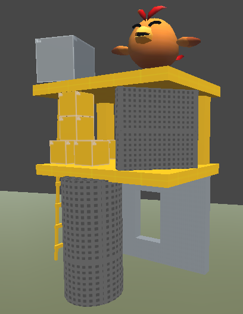
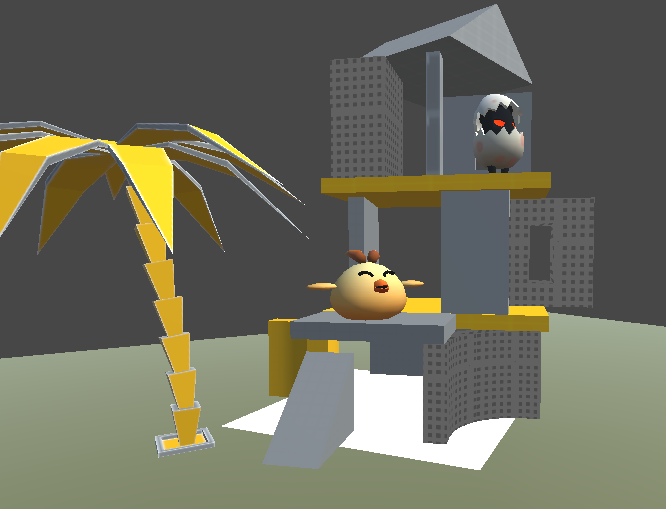
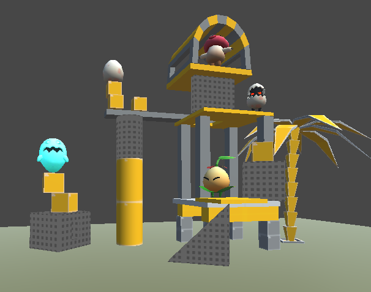
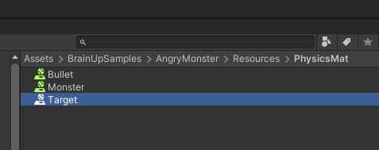
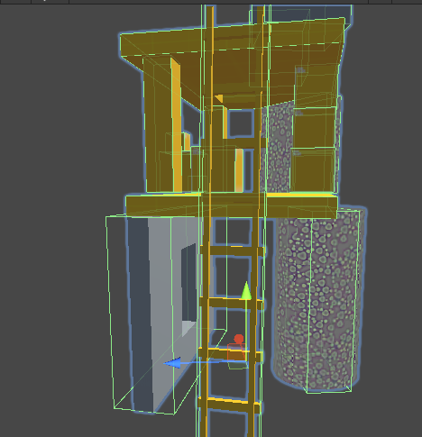
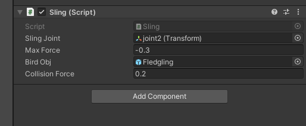
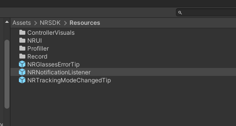

UnityDemo-2 NReal 意念打怪
一、运行效果展示
上述视频为在未佩戴设备的情况下录制，所以校准得分为 0; 攻击目标使用手柄按键实现的触发, 将大音量可以听到语音提示。
二、游戏玩法
游戏目标：：每个关卡有一个或多个怪兽，全部消灭则通关
消灭怪兽的方式：通过弹弓发射炮弹攻击砖块，让砖块倒塌，进而消灭邪恶的怪兽。怪兽碰撞到其它砖块或地面时速度大于 0.1 或砖块速度大于 0.5 则被判定为死亡。
关卡切换：当前关卡内，怪兽全部被消灭后切换关卡
砖块：砖块自带物理效果，有质量和重力，被撞后会倒塌，被撞击会弹开，并发出撞击声。不同材质的砖块具有不同的参数(质量、弹力、摩擦力、易碎程度等)，用于区分游戏难度。
弹弓：用于发射炮弹
炮弹：炮弹从弹弓发射, 用于攻击砖块, 炮弹的物理性质固定不变
三、关卡设计
3.1) 关卡一
难度等级：低
频闪目标：2
3.2) 关卡二
难度等级：中
频闪目标：3
3.3) 关卡三
难度等级：中
频闪目标：3
四、代码实现
4.1) 物理效果
物理效果使用 Unity 自带的物理材质来实现。积木、敌方小怪兽、炮弹分别使用不同的物理材质。炮弹的重量要调整的大一点。敌方小怪兽的摩擦力要调整的小一点，让它可以在积木倾斜时候可以滑下去，方便它被消灭。积木的摩擦力要大一些，为了保持积木在没有受攻击时候的稳定性。
按照默认的 BoxCollider，有些积木是无法稳定放置的，对于无法稳定放置的积木，需要手动调整其大小并使它顶部和底部尽量接触到其它积木，以使结构稳定。
4.2) 弹弓实现
4.2.1) 模型

弹弓模型使用网上找到的美术资源，它带有骨骼，拉弓是通过用 DoTween 做位移动画来实现。
4.2.2) 拉弓
拉弓即是给弹仓做 DoTween 动画。拉弓过程分了两个阶段，第一个阶段，拉。第二个阶段，在拉到底的位置做小幅度的 PingPong 摆动。见脚本 Sling.cs。这个脚本绑定到场景中的弹弓模型上面，并给它相应属性赋值。SlingJoint 是弹仓骨骼关节，MaxForce 是拉弓力度，BirdObj 是绑定到弹弓上的小鸟造型的炮弹。CollisionForce 是小鸟撞击到积木时候额外增加的力。

// 拉弓
public void Pull() {
Debug.Log("Called pull");
if (GameController.Instance.GetGameState() != GameController.GameState.LevelStarted
&& GameController.Instance.GetGameState() != GameController.GameState.Lobby) {
return;
}
// 旧的动画停止掉
pullFull?.Kill();
randomMove?.Kill();
// 拉弓动作
pullFull = SlingJoint.DOLocalMoveZ(MaxForce, 1f);
pullFull.onComplete = () => {
// 在目标位置 pingpong
randomMove = SlingJoint.DOLocalMoveZ(-0.13f, 2f).SetEase(Ease.InOutSine).SetLoops(-1, LoopType.Yoyo);
};
// 播放拉弓音效
AudioHelper.Instance.PlaySFX(SlingJoint.gameObject, AudioHelper.Clips.pull);
// 开始频闪
Invoke("EnableBlink", 2f);
}
4.2.3) 发射
脚本中发射炮弹就是把小鸟用弹弓发射出去。调用 public void Shoot(Transform target)函数即可。发射的过程也分了多个阶段。第一阶段，弹仓从满弓位置到中间平衡点；第二阶段，弹仓再往前弹一点儿；第三阶段，弹仓回弹到初始位置。在弹仓到达中间平衡点时候，炮弹速度达到最大值，此时炮弹以抛物线朝着目标发射出去。
五、附录
低电量通知的弹窗屏蔽方法
NReal 上有个电量低于 30% 就强行退出的问题，实际情况是电量低于百分之三十我们仍需要正常使用设备。解决方法就是找到 NRNotificationListener 这个 prefab，然后把它的电量通知勾选取消掉即可解决。